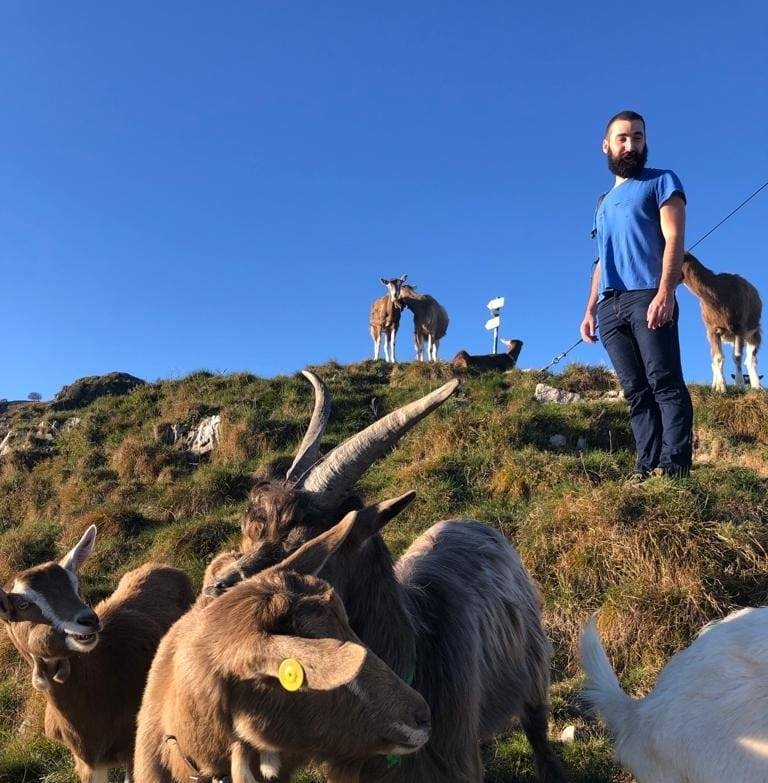

Me (right), in good company.
You can find a CV here.
Contacts
davide.castelnovo@uniud.it
Via delle Scienze 206,
33100 Udine (UD)
Davide Castelnovo
I am a PhD student in the Department of Mathematics, Physics and Computer Science at the University of Udine. My supervisor is Marino Miculan.
My main research area is category theory and its interaction with algebra and with theoretical computer science.
In June I'll start working in the Department of Mathematics of the University of Padova.
Ongoing projects
Talks
- FoSSaCS 25, A new criterion for M,N-adhesivity, with an application to hierarchical graphs, Munich, 6 April 2022 (slides).
- GReTA, A new criterion for M,N-adhesivity, with an application to hierarchical graphs, online, 17 June 2022 (recording).
- CSL 2022, Fuzzy Algebraic Theories, Göttingen, 18 February 2022 (slides).
- TallCat, Fuzzy Algebraic Theories, Tallinn, 27 January 2022.
- CALCO 9, Closure Hyperdoctrines, Salzburg, 2 September 2021 (slides).
- TallCat, Equational theories in an enriched context, Tallinn, 8 October 2020.
Publications
- Davide Castelnovo, Fabio Gadducci, Marino Miculan, A new criterion for M,N-adhesivity, with an application to hierarchical graphs, 2022, Proceedings of the 25th International Conference on Foundations
of Software Science and Computation Structures (link).
- Davide Castelnovo, Marino Miculan, Fuzzy Algebraic Theories, 2022, Proceedings of the 30th EACSL Annual
Conference on Computer Science Logic (link).
- Davide Castelnovo, Marino Miculan, Closure Hyperdoctrines, 2021, Proceedings of the 9th Conference on Algebra and Coalgebra in Computer Science (link).